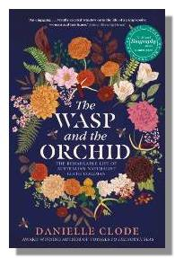

The Wasp and the Orchid
Winner - FAW Literary Award for Best Nonfiction,
Shortlisted for the National Biography Awards
‘Have you met Mrs Edith Coleman? If not you must – I am sure you will like her – she’s just A1 and a splendid naturalist.’
In 1922, a 48-year-old housewife from Blackburn delivered her first paper, on native Australian orchids, to the Field Naturalist’s Club of Victoria. Over the next thirty years, Edith Coleman would write over 300 articles on Australian nature for newspapers, magazines and scientific journals. She would solve the mystery of orchid pollination that had bewildered even Darwin, earn the acclaim of international scientists and, in 1949, become the first woman to be awarded the Australian Natural History Medallion. She was ‘Australia’s greatest orchid expert’, ‘foremost of our women naturalists’, a woman who ‘needed no introduction’.
And yet, today, Edith Coleman is all but forgotten. How did this remarkable woman, with no training or connections, achieve so much so late in life? And why, over the intervening years, have her achievements and her writing been forgotten?
Biologist and award-winning writer Danielle Clode sets out to uncover Edith’s story, from her childhood in England to her unlikely success, sharing along the way Edith’s lyrical and incisive writing and her uncompromising passion for Australian nature and landscape.
Published by Picador Australia (PanMacmillan)
Available in paperback and ebook
Available in all good bookstores
Find your local bookstore Buy now in Aus/NZ
Praise for the book
‘This book is both biography and memoir: a masterpiece of archival detection, intricate orchestration, and vivid recreation . . . brought to life with vivid, elegant prose and acute insight.' —Judges Report, National Biography Award
‘an engaging, often vividly created, window into the life of an impressive woman and her times’ —Steven Carroll, author of the Glenroy series
‘a fascinating and entertaining read’—The Planthunter
‘an eloquently written testament to one of our foremost women scientists by a writer who is a formidable contributor to the field in her own right —Anne Green, Eating my Words
‘an approachable blend of biography, science, nature writing and social history’ —Deborah Bogle, The Advertiser
‘Coleman’s housewifely amateur status, whereby the blending of DIY anecdote and scientific rigour in her own garden became a hallmark of her style, could qualify her as something of a retro hero for our times’ —Gregory Day, author of A Sand Archive
‘a very informative and entertaining book, a must-read to appreciate Edith Coleman’s contribution to our knowledge and to nature writing and to appreciate and enjoy Danielle’s refreshing writing style’ —Australian Orchid Foundation
‘anyone with an interest in Australian women writers from the past will enjoy this book, as will nature enthusiasts . . . a be-ribboned hardback beauty’ —Theresa Smith
‘a delightful book about a truly remarkable woman’ —Anne Rinaudo